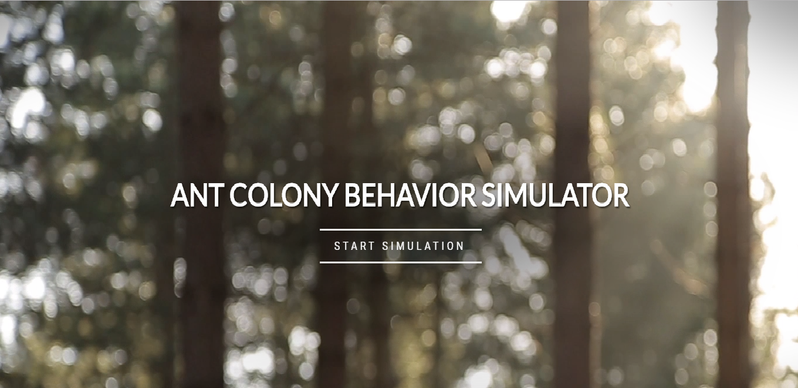
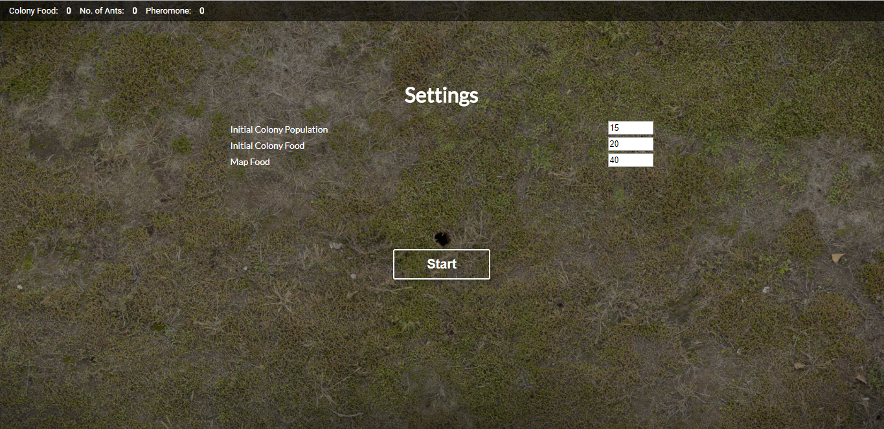
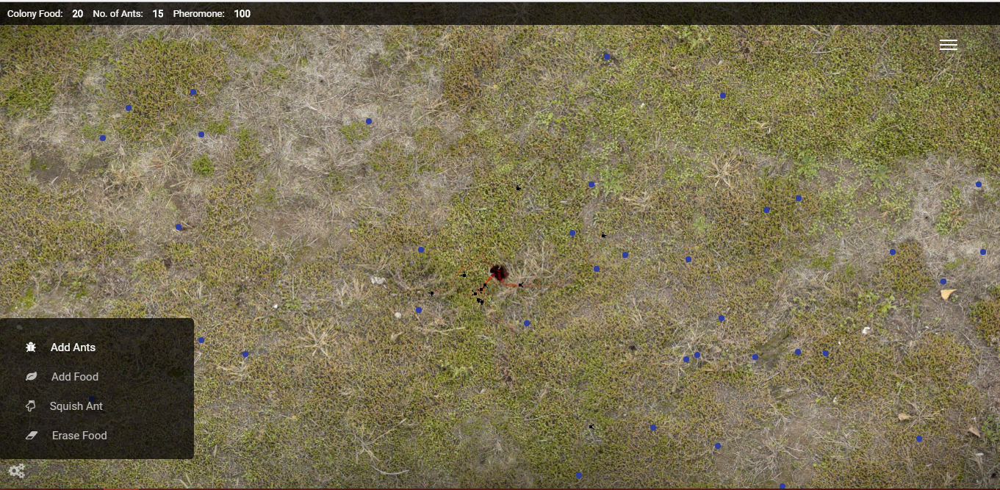
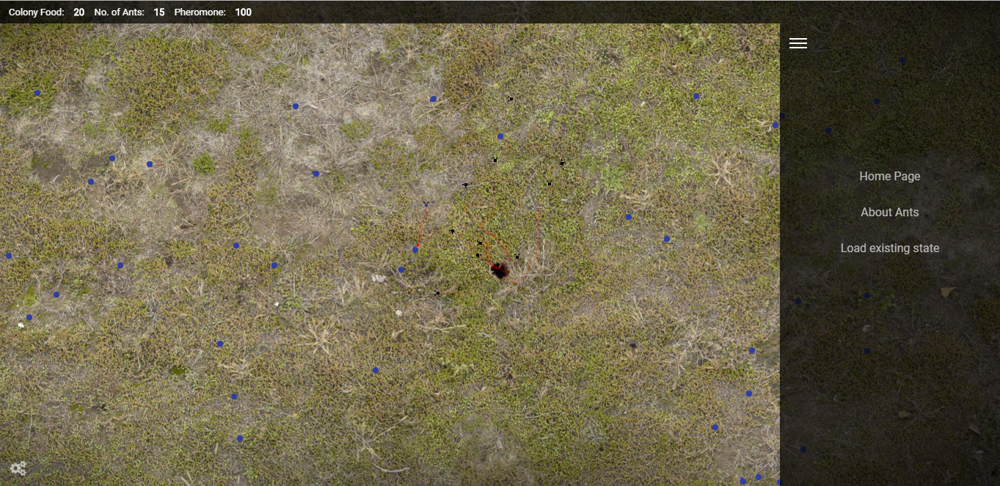
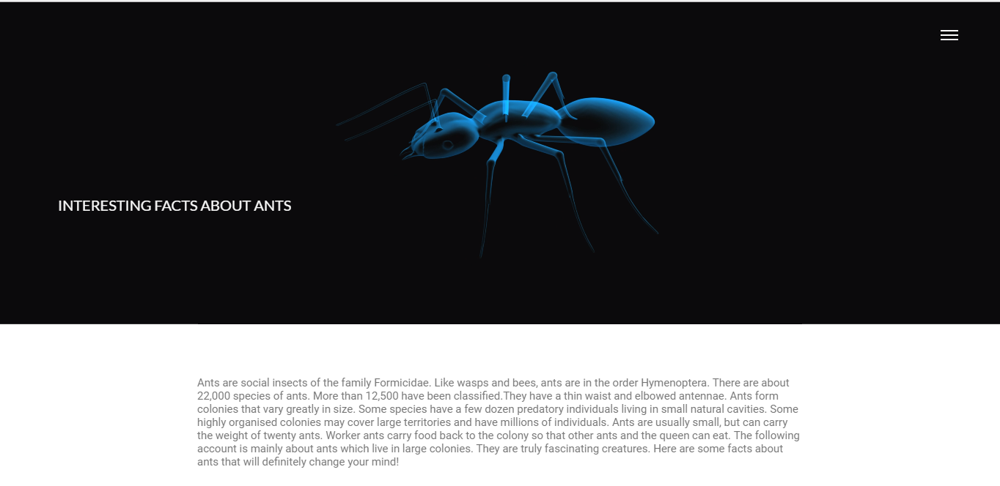

Antvior
Abstract
Aplicația web are rolul de a simula comportamentul unui mușuroi de furnici.
Cuvinte cheie
antvior, proiect, infoiasi, cliw, web
Pasul 1:
Accesarea site-ului/vizualizarea paginei "Home" .
Pasul 2:
Pornirea simulatorului, prin apasarea butonului "Start simulation"
Pasul 3:
Setarea parametrilor pentru simulare, si pornirea ei prin apasarea butonului start.
Pasul 4:
Urmariti simularea si distrati-va cu butoanele dedicate furnicilor.
Pasul informativ
In meniul din partea dreapta a ecranului puteti accesa pagina cu informataii suplimentare dedicata furnicilor
 